In Access muss grundsätzlich zwischen zwei Bearbeitungsmodi unterschieden werden:
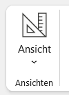
schaltet in den Entwurfsmodus um.
Hier können die Datenbanktabellen gestaltet werden.
Schalte in den Entwurfsmodus und erzeuge folgende Tabelle:
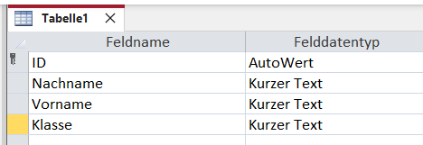
Speichere die Tabelle unter dem Namen "Schueler". (Evtl. musst du die Tabelle1 mit einem Rechtsklick in Schueler umbenennen.)
Erzeuge im Erstellen-Menü eine neue Tabelle und speichere sie unter dem Namen Klassen.
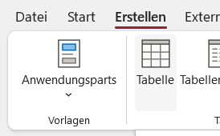
Trage im Entwurfsmodus folgende Attribute ein:
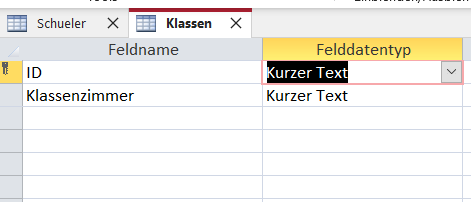
Überprüfe, dass für das Attribut ID folgende Feldeigenschaften gelten:
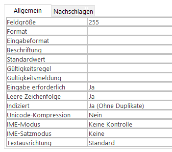
Damit legen wir ID als Primärschlüssel fest, der aber nicht automatisch erzeugt wird.
Schließe alle Tabellen durch eine Rechtsklick auf den Tabellenkopf:
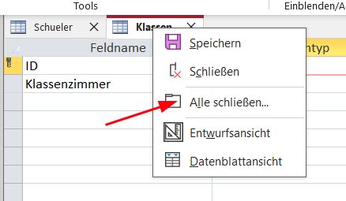
Wechsele ins Menü Datenbanktools und klicke dort auf Beziehungen:
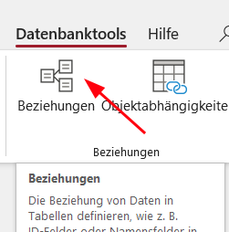
Ziehe beide Tabellen auf die Arbeitsfläche.
Beziehungen zwischen den Tabellen werden jetzt erstellt, indem der Primärschlüssel der einen Tabelle auf das passende Attribut der zweiten Tabelle gezogen wird.
Ziehe die ID der Tabelle Klassen auf das Attribut Klasse der Tabelle Schüler.
Die Kardinalität der Beziehung wird automatisch gesetzt. Da jeder Schüler genau eine Klasse besucht, eine Klasse aber von beliebig vielen Schüler besucht wird, entsteht eine 1:n-Beziehung.
Wähle zusätzlich referentielle Integrität, damit Access automatisch prüft, ob die Klasse, die in der Tabelle Schüler eingetragen wird, auch tatsächlich existiert:
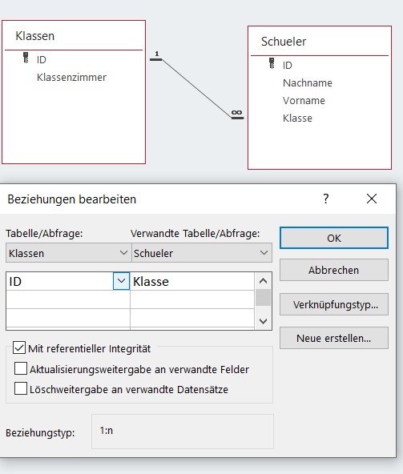
Im Ergebnis wird die Relation korrekt dargestellt:
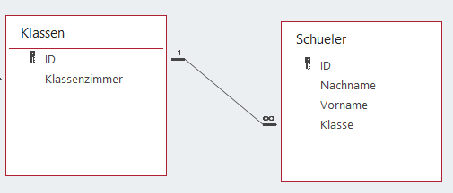
Trage in die drei Tabelle in folgender Reihenfolge Werte ein:
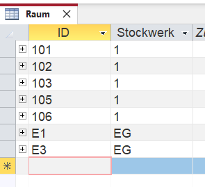
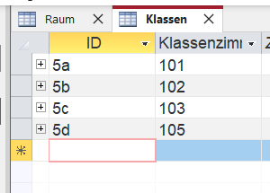
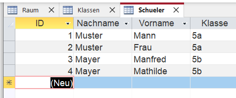
Erstelle eine Tabelle Lehrer und binde sie in dein Datenbankschema ein:
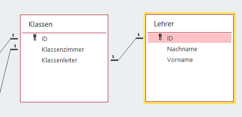
Ergänze deine Datenbank um die Tabellen Wahlkurs und Kurswahl:
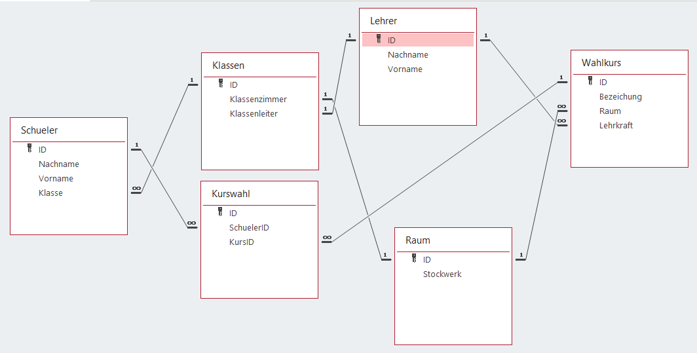
Trage in deine Tabellen in der richtigen Reihenfolge Daten ein, so dass Schüler Wahlkurse belegt haben.